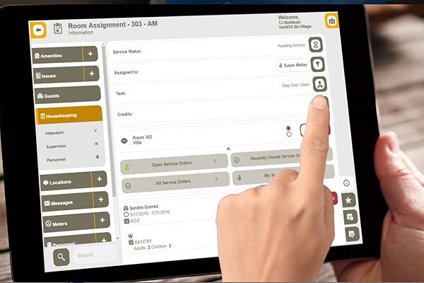
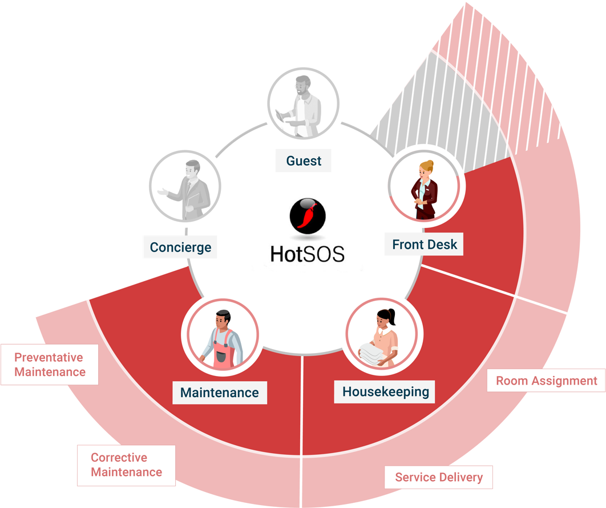

AI and Hospitality Worker
Background
Automation across many industries is on the rise. Experts believed that non-dexterous tasks will be subsumed by artificial intelligence. As a result, under-represented, mostly immigrant hospitality workers are most likely to be affected by the automation. In this research we seek to understand the benifits and pitfalls of implemeting AI into hopitality sector.
Specifically, the research concerns the utilization of HOTSOS, a task coordination app:HotSOS is the premier application for empowering hotel employees to provide guests the best possible stay from a service and facilities perspective. Through HotSOS, employees and managers can access multiple functions catered to their role within the hotel operations.
The role based access notifies staff of awaiting service orders and allows them to view detailed information and manage pending work better. HotSOS also gives the ability to generate service orders and perform guestroom or public space inspections and gives department heads and hotel managers a tool to easily manage operations on the go.
Our research aims to:
- Understand the current state of union hospitality worker, and automation technology, HOTSOS
- Iterative design of technology and models;
- Identify jobs-skills, workforce needs and training materials to prepare managment and workers to succees in an increasingly technologically enhanced workplace;
- Evaluate outcomes to understand how they impact the future of work.

My Role
- In-depth interviews & workshops
- Conducted 20+ interviews to identify user pain-points
- Asked questions about workplace environment, current experience with the app, and what they want to add to the current app
- Coded and analyzed the qualitative data using NVIVO
- Designed survey question bank
- Selected survey questions from priori literature
- Compiled and reviewed questions based on the research question
- Shadowed usability-testing
Key insights + Pain-points

Find it hard to communicate when using HOTSOS. The end-users (housekeepers) have raised concerns about communication with frontdesk, manager, and co-workers. When guests checked-out of the room, HOTSOS will inform the frontdesk that the room is ready for cleaning. However, a lot of times, guests are still in their room after checking out. HOTSOS will still autometically assign tasks to the housekeepers.
Furthermore, housekeepers have also reported trouble communicating ”trashed room” status to management; Trouble communicating with co-workers; Trouble communicating room status with front desks, etc
Quotes from the interviewees
cause lots of people, they use their phone, they check, they check out, right? But then they know that checkout is actually, I don't know what it is at your hotel, but 11 or something like that. And so they sit around, you know, their, their flight isn't until whenever. So they sit and they've checked out it's eight o'clock in the morning, but they sit around in the room you have to let the front desk know but HOTSOS is not doing that like..like informing the folks
Lack of room information in the assignment list. Housekeepers usually have their designated section. They are familiar with the room and the work they can carry on in their sections. HOTSOS assigned them to rooms to housekeepers which they are not familiar with, thus the housekeepers don’t have prior knowledge or information about the room. Lack of information will cause a waste of extra labor to redo the task.
Quotes from the interviewees
So there's work that's being done that people don't see, it's like almost invisible work that you know, is there, but someone else is coming to the section randomly wouldn't realize what's happened. You don't get the same quality of cleaning....I don't have that person in my second no more because they don't know what they doing, or, and then you can also, that's another way. I don't know if I would give them this as a tool, but it also shows you the work that other housekeepers do.